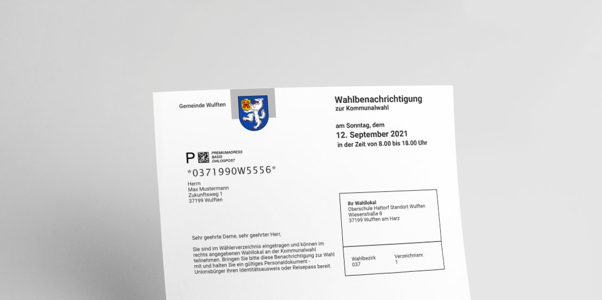
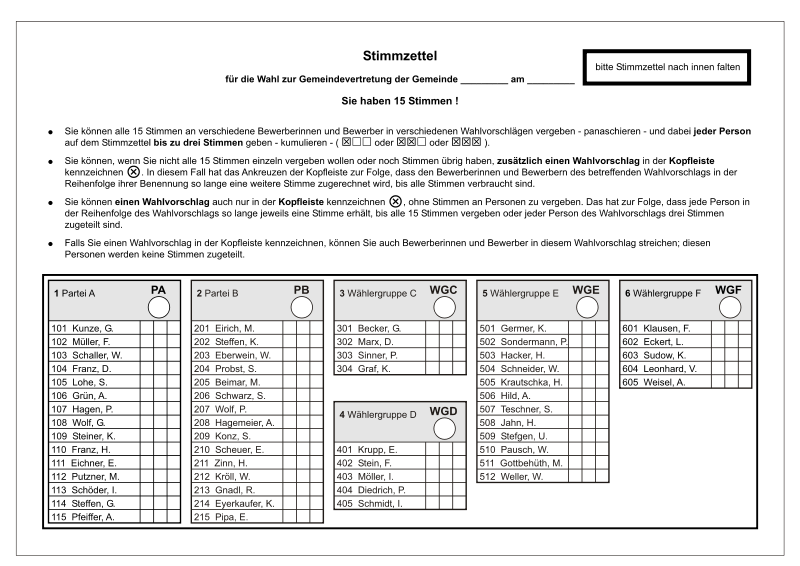

Wer darf wählen?
Mindestens 16 Jahre
am Wahltag.
3 Monate Wohnsitz
in Niedersachsen vor der Wahl.
EU-Staatsangehörigkeit
deutsche oder andere EU-Bürgerschaft.
Tipp: Du musst dich nicht selbst um die Eintragung ins Wählerverzeichnis kümmern – das übernimmt das Einwohnermeldeamt automatisch.
Wahlbenachrichtigung per Post
Rechtzeitig vor der Wahl bekommst du Post: deine Wahlbenachrichtigung. Darauf steht alles, was du wissen musst.
- placeWahlraum – meist Schule, Rathaus oder ein öffentliches Gebäude in deiner Nähe
- scheduleÖffnungszeit – am Wahlsonntag in der Regel 8–18 Uhr
- badgeBring deine Wahlbenachrichtigung & deinen Personalausweis mit

So sieht der Stimmzettel aus

Im Wahlraum bekommst du einen oder mehrere Stimmzettel. Pro Wahl (Gemeinderat, Samtgemeinderat, Kreistag …) gibt es einen Zettel.
Mit dem Stimmzettel gehst du in die Wahlkabine – dort sieht niemand, wen du wählst. Stifte liegen bereit. Wahlen sind geheim.
Wichtig:
Bei Kommunalwahlen hast du 3 Stimmen pro Stimmzettel. Bei Bürgermeister/Landrat-Wahlen nur 1 Stimme.
Kumulieren & Panaschieren
Du hast 3 Stimmen pro Wahl. Wie du sie verteilst, entscheidest du selbst. Klick durch die drei Optionen:
Beispiel: Kumulieren
Du gibst alle drei Stimmen einer Partei oder einer einzigen Kandidatin / einem Kandidaten. Das stärkt diese Person besonders.
Achtung: Mehr als 3 Kreuze auf einem Stimmzettel ⇒ Stimme ungültig. Nicht mehr und nicht weniger.
Briefwahl: wenn du am Wahltag nicht kannst
Du bist am Wahltag im Urlaub, bei der Arbeit oder krank? Dann kannst du per Brief wählen – auch das ist sicher und vollkommen normal.
- Briefwahl-Antrag stellen (über das Formular auf deiner Wahlbenachrichtigung oder online).
- Wahlunterlagen kommen per Post – darin findest du Stimmzettel und einen Wahlumschlag.
- In Ruhe ankreuzen, alles in den Umschlag und rechtzeitig zurücksenden – oder direkt im Rathaus abgeben.
Wichtig:
Die Briefwahl-Unterlagen müssen vor Schließung der Wahllokale am Wahltag bei der Gemeinde sein. Lieber ein paar Tage früher abschicken!
Wieso überhaupt wählen?
Es geht um deinen Ort.
Spielplatz, Bus, Internet, Energie: in der Kommunalpolitik wird konkret entschieden, was du im Alltag siehst und nutzt.
Jede Stimme zählt.
Auf Dorfebene macht eine einzige Stimme oft den Unterschied – mehr als bei jeder Bundestagswahl.
Politik ist nicht „die da oben".
Wer zur Wahl geht, mischt sich ein – und macht klar: Mein Wulften gestalte ich mit.
Demokratie ist ein Privileg.
Nicht überall auf der Welt darf man wählen. Nutze dieses Recht – und sei Vorbild für andere.
Bereit für deine Stimme?
Schau dir an, wofür wir 2026 antreten – damit du genau weißt, was du mit deinen drei Stimmen bewirken kannst.
Themen 2026 ansehen arrow_forward